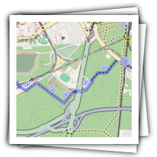
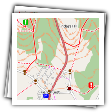
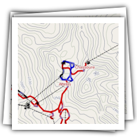
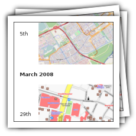
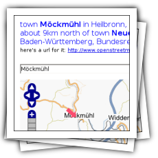
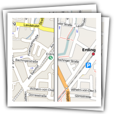
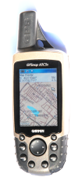

Schaufenster
Viele Leute im und außerhalb des OpenStreetMap-Projektes stellen schöne Karten her oder bieten interessante Dienste an. Auf dieser Seite präsentieren wir ein paar davon.
Zum Anschauen
Karten müssen nicht immer gleich aussehen. Je nach der gewünschten Nutzung können OpenStreetMap-Karten mit eigenen Stilen dargestellt und in passende Webanwendungen eingebettet werden.
|
 Die Open Cycle Map zeigt Fahrradrouten und Unterstellplätze; große Strassen rücken in den Hintergrund. |
 Die Free Map hat Wanderwege und Höhenlinien in vielen Gegenden Großbritanniens. |
Das Tagwatch-Programm
analysiert die OpenStreetMap-Daten und ermittelt, wie oft welche
Arten von Objekten vorkommen. Mit OsmAware bekommt man einen Überblick darüber, was sich in einer Gegend in den letzten Tagen, Stunden oder Minuten getan hat. |
|
 Auf der Piste Map sind Skigebiete, Abfahrten, Loipen und Lifte verzeichnet. |
 Im OpenStreetMap-Wiki gibt es die Seite Featured Images, die jede Woche um ein neues interessantes OpenStreetMap-Bild ergänzt wird. |
Zum Ausprobieren
Das OpenStreetMap-Projekt und einzelne Mitstreiter stellen im Internet verschiedene Dienste zur Verfügung, die auf OSM-Daten und -Karten basieren.
|
 Der Name Finder ist die "Geolocation-Engine" von OpenStreetMap: Er findet Koordinaten zu eingegebenen Namen. |
 Der Kartenvergleich zeigt, wie sich OpenStreetMap vom "Wettbewerb" unterscheidet. |
Der Open Route Service an der Uni
Bonn kann aufgrund von OSM-Daten Fahrtrouten in Deutschland berechnen.
Auf der POI-Karte von Paul
Lenz kann man sich die Points of Interest anzeigen lassen, die einen interessieren.
Die History-Seite macht die zeitliche Entwicklung der OpenStreetMap-Daten in einer beliebigen Gegend sichtbar. |
|
Unter OpenStreetBugs kann
man auch als Laie Fehler eintragen, die dann von Mappern gefixt werden können.
Der ITO OSM Mapper zeigt einem verschiedene dynamisch änderbare Sichten auf die OSM-Daten. |
Auch in Äthiopien wird OpenStreetMap benutzt: Zum Beispiel zum Finden von Firmen. |
Zum Runterladen
Bei OpenStreetmap bekommen Sie nicht nur Karten, sondern können auch die Rohdaten direkt herunterladen. Verschiedene Leute stellen auch Ausschnitte aus diesen Daten im OSM XML-Format oder in anderen Formaten zur Verfügung.
|
Das Planet File wird einmal
wöchentlich erzeugt und enthält einen Dump der ganzen Datenbank. Braucht man es
aktueller, kann man die täglichen, stündlichen und minütlichen Änderungen
runterladen.
Die Geofabrik stellt einige Ausschnitte aus dem Planet-File für verschiedene europäische Länder und die deutschen Bundesländer zur Verfügung (als OSM-XML-Datei und als Shapefiles). |
 OpenStreetMap-Karten können auch auf GPS-Geräten von Garmin eingesetzt werden. Verschiedene Leute stellen fertige Karten zum Download zur Verfügung. |
Das Programm Navit kann
mit OpenStreetMap-Daten mobil navigieren.
Zum Bearbeiten der Daten stehen unter anderem die Editoren
JOSM und
Merkaartor
zur Verfügung.
Mit Kosmos kannst Du schöne OSM-Karten unter Windows herstellen. |